In this codelab, you'll learn how to animate using scratch.
What you'll learn
- Use vector graphics.
- Review variables.
Open the starter project and click Remix. Choose your starter project based on the color of the monster.
Monster colors
- Teal Monster
- Purple Monster
- Orange Monster
- Pink Monster
- Blue Monster
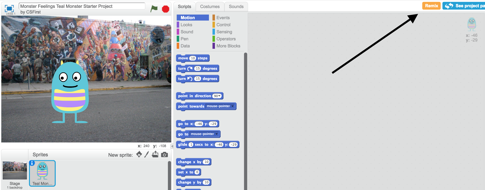
First, we are going to create a story and animate the monster's expressions.
Steps
- Create a story that involves at least 2 different emotions. Look in costumes to see the emotions.
- Program the monster to tell the story.
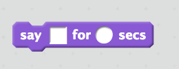 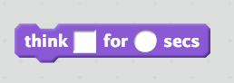
- Program the monster to change expressions by changing costumes.
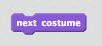
- Add an event block to start the story by clicking the green flag.
Next, we are going to add a variable to control the expression.
Steps
- Use a "feelings" variable to keep track of the monster's emotion.
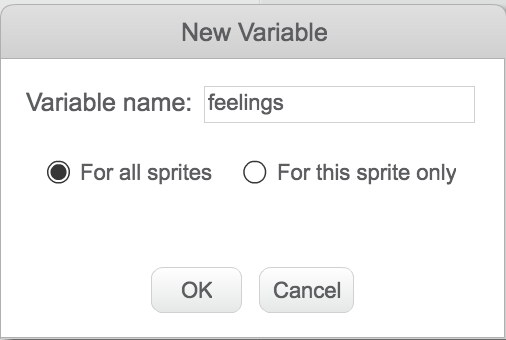
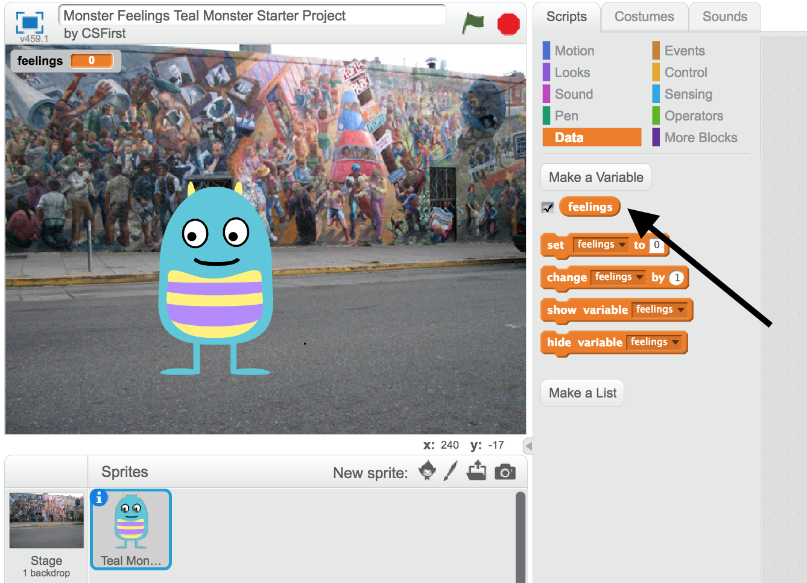
- Change costume based on the variable.
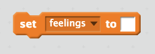
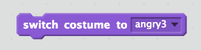
Now, we are going to add our own custom expressions and animate the body of the monster.
Add expressions
- Duplicate a monster costume. (Control click on a costume)
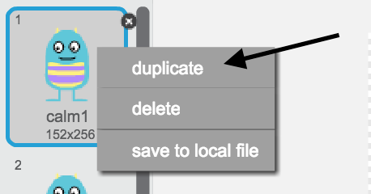
- Use vector graphics to change the expression of your new costume to create a new emotion.
- Use your new emotion in your story.
Animate the body of the monster
- Choose one of your expressions to add body animation to. Duplicate that costume a few times.
- Change each of the duplicates a little to animate a body part. Example:
Costume 1: 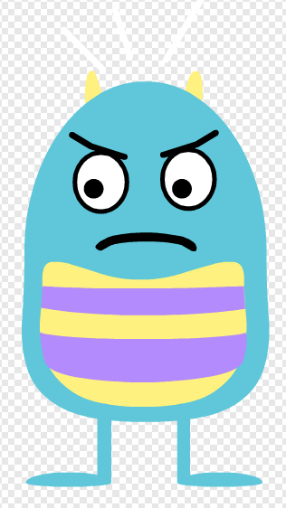 -->
Costume 2: 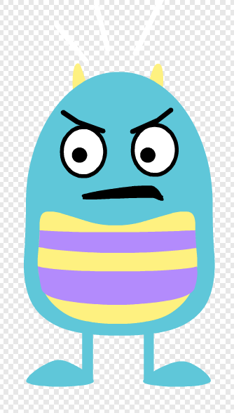 -->
Costume 3: 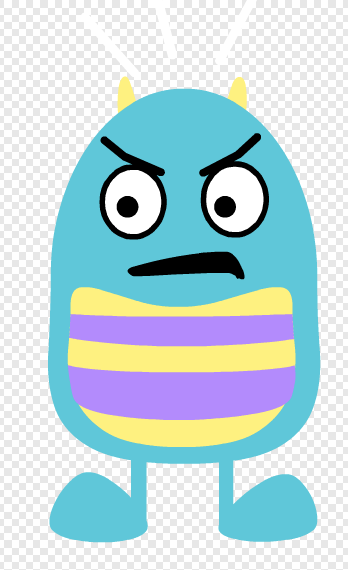
If you finish early, implement one or more of the following features for a bonus checkoff.